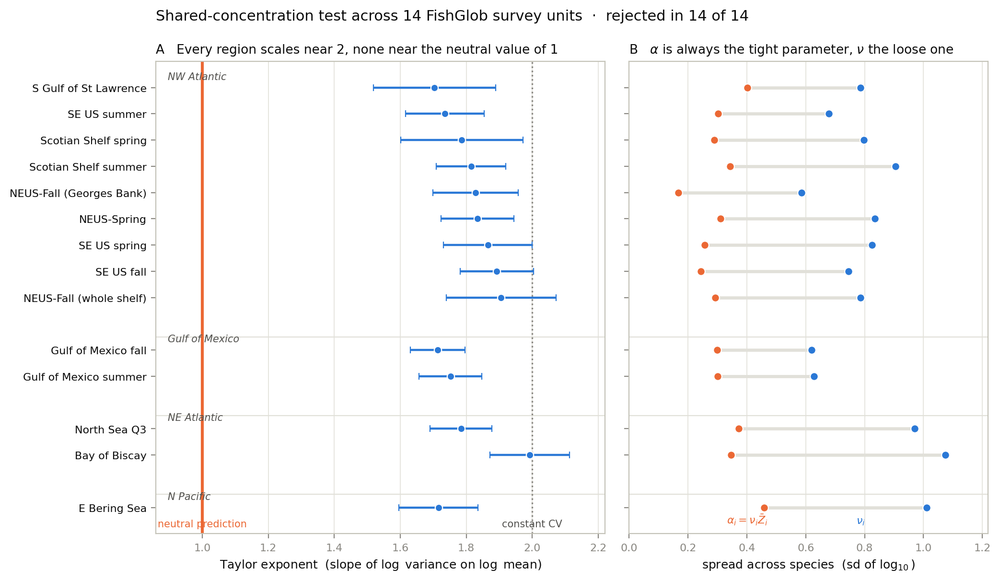

Neutral theory predicts that the relative abundance of species follows a Beta distribution, and that the whole assemblage follows a Dirichlet. The Dirichlet carries a constraint the Beta alone does not: its concentration parameter is a community-level sum, so every species must share one value. It does not hold in any survey we examined.
Annual biomass shares for fourteen survey units drawn from six scientific bottom-trawl programmes across four ocean basins, together with the code that fits a Beta distribution to each species, tests whether the concentration parameters are equal, and calibrates that test against bootstraps simulating autocorrelated Jacobi paths rather than an asymptotic reference.
The headline results are that the Beta is an adequate marginal description, that the shared concentration is rejected in every survey unit, and that the failure takes the form of a Taylor exponent near 2 where neutral drift requires 1 — so rare and common species fluctuate by similar proportions of their own abundance.
git clone https://github.com/horaciosamaniego/fishglob-spad-neutrality.git
cd fishglob-spad-neutrality
pip install -r requirements.txt
make all # or: python src/run_analysis.pyThe first run downloads survey files from the FishGlob repository into
~/.fishglob. A reduced smoke test, make quick, finishes in
about three minutes. The full pipeline takes roughly forty. Seeds are fixed, so the
likelihood ratio, the fitted parameters and the Taylor exponents reproduce exactly;
bootstrap quantiles and power estimates carry the usual Monte Carlo variation.
| Quantity | Value |
|---|---|
| Survey units rejecting a shared concentration | 14 of 14 |
| Taylor exponent | 1.70 – 1.99 (median 1.80) |
| Within two standard errors of the neutral value | 0 of 14 |
| Fitted concentration spread, within a region | 384× – 11,166× |
| Median α across regions | 0.80 – 2.41 |

All survey data come from
FishGlob v2.1.0
(Maureaud et al. 2024,
CC BY 4.0), downloaded at run time rather than redistributed here. The single file
shipped in data/ is the derived share matrix for the pilot region, so the
analysis can be re-run without network access.
FishGlob asks that users read its disclaimer and citation policy and notify the consortium of the datasets used, so that the data providers receive credit.
See CITATION.cff. Please cite the paper rather than this repository
where the two would serve the same purpose.